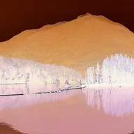

عكس

يعكس قنوات الألوان في الصورة بمقدار دمج مع إمكانية عكس قناة ألفا.
الإعدادات
| الإعداد | النوع | النطاق | الافتراضي |
|---|---|---|---|
| المقدار | رقم | من 0 إلى 1 | 1 |
| عكس ألفا | تشغيل أو إيقاف | – | إيقاف |

يعكس قنوات الألوان في الصورة بمقدار دمج مع إمكانية عكس قناة ألفا.
| الإعداد | النوع | النطاق | الافتراضي |
|---|---|---|---|
| المقدار | رقم | من 0 إلى 1 | 1 |
| عكس ألفا | تشغيل أو إيقاف | – | إيقاف |